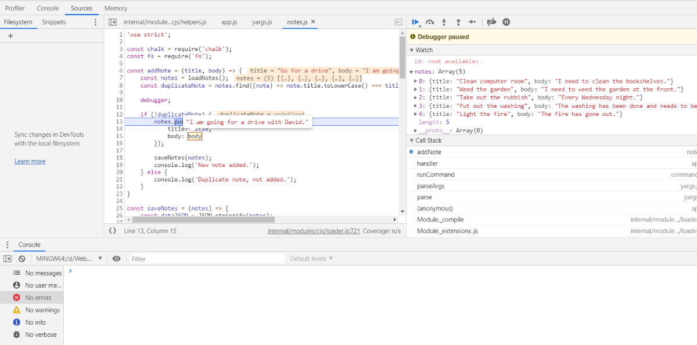

Node comes with a great set of tools for getting to the bottom of any bug or programming issue.
While it's nice to have advanced debugging tools at the ready, there's nothing wrong with using console.log to debug your application. It's not the fanciest technique, but it works.
When in doubt, use a few calls to console.log to figure out what's going on. It's great for dumping a variable to the terminal so you can check its value. It also works for figuring out what order your code is running in.
Printing values to the console with console.log is a good start, but there are often times where we need a more complete debugging solution. For that, Node.js ships with a built-in debugger. It builds off of the developer tools that Chrome and V8 use when debugging JavaScript code in the browser.
Start your application with inspect to use the debugger.
node inspect app.js
This isn't working in Windows at the moment, use this instead.
node --inspect-brk app.js
Next, visit chrome://inspect in the Chrome browser. There, you'll see a list of all the Node.js processes that you're able to debug. Click "inspect" next to your Node.js process to open up the developer tools. From there, you can click the blue "play" button near the top-right of the "sources" tab to start up the application.
When running the app in debug mode, you can add breakpoints into your application to stop it at a specific point in the code. This gives you a chance to explore the application state and figure out what's going wrong.
console.log('Thing one');
debugger; // Debug tools will pause here until your click play again
console.log('Thing two');

Note: To get the console open you press the escape key.